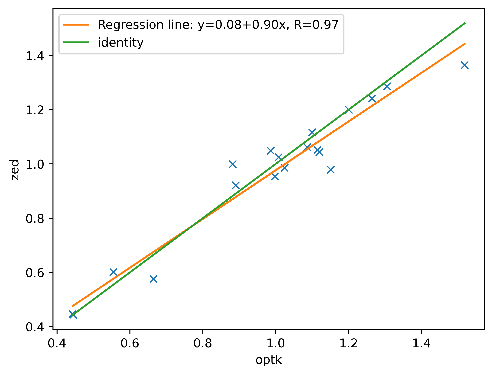

Anonymous Authors.
Abstract: Frailty assessment plays a pivotal role in healthcare, particularly in the context of treatment decisions for older adults, including those in oncology. Currently, the process involves laborious and time-consuming exercises measured using stopwatches. This paper introduces a novel methodology that employs depth camera-derived skeletal data to measure standard total time and additional frailty-related metrics. The study presents results from a cohort of 22 elderly participants, with assessments conducted by both medical professionals and our robotic system. The findings demonstrate the precision of our approach in aiding physicians in frailty assessment. Moreover, we establish that the supplementary metrics we propose contribute to enhanced frailty evaluations. This research represents a significant stride towards the advancement of social robotics in healthcare, offering potential improvements in patient care and clinical decision-making.
Short Introduction: In this work, it is defined and validated a method to automate the commonly used Short Physical Performance Battery (SPPB) and the Timed Up and Go (TUG) tests. The method provides the times and additional and frailty-related metrics that cannot be seen with the human eye. To do so, a ZED2i camera with its SDK is used to extract and track the skeleton of the patient during the test execution.
The different individual tests consist on:
- (SPPB) Standing Balance: The patient has to maintain balance for ten seconds with the feet in three predetermined positions: together, tandem, and semi-tandem.
- (SPPB) Gait Speed: The patient has to walk six meters in a straight line. The first meter corresponds to acceleration and the last one to deceleration. Time is taken on the constant speed phase corresponding to the 4 central meters.
- (SPPB) 5 Times Sit-Stand: It involves standing up and sitting down from a chair five times while measuring the total time taken.
- (TUG) Timed Up and Go: It consists of standing up from a chair, walking three meters towards an object, surrounding it, walking back, and sitting in the same chair.
A distribution example for the tests is shown in Figure 1.
Tracking System Validation
Here, the obtained metrics from the tests, captured with the ZED2i camera using its SDK, are validated using the OptiTrack system as a ground truth. To conduct this validation, 7 volunteers performed each of the tests three times wearing the OptiTrack suit with 41 markers. The skeleton 3D points were recorded using both ZED SDK and Mediapipe algorithms. The volunteers were asked to vary their behavior in each run of the tests to have more variance between the samples. The following results represent the metrics of the profitable runs where metrics could be acquired.
| Test | Metric | Mean Optitrack | Mean Camera | MAPE (%) |
|---|---|---|---|---|
| Gait Speed | Time (s) | 4.71 | 4.76 | 4.73 |
| Gait Speed | Left Stride Length (m) | 1.25 | 1.16 | 8.41 |
| Gait Speed | Left Stride Velocity (m/s) | 0.99 | 0.96 | 5.12 |
| Gait Speed | Left Step Length (m) | 0.67 | 0.52 | 22.26 |
| Gait Speed | Left Step Velocity (m/s) | 1.07 | 0.93 | 15.49 |
| Gait Speed | Right Stride Length (m) | 1.24 | 1.13 | 9.53 |
| Gait Speed | Right Stride Velocity (m/s) | 0.99 | 0.97 | 5.34 |
| Gait Speed | Right Step Length (m) | 0.66 | 0.67 | 12.26 |
| Gait Speed | Right Step Velocity (m/s) | 1.05 | 1.09 | 11.32 |
| Gait Speed | Range Balance (m) | 0.05 | 0.08 | 68.74 |
| Gait Speed | Mean Balance (m) | 0.03 | 0.04 | 66.02 |
| Gait Speed | Number Steps | 7.11 | 7.68 | 11.11 |
| TUG | Time (s) | 9.29 | 9.36 | 2.03 |
| TUG | Left Stride Length (m) | 1.11 | 1 | 12.41 |
| TUG | Left Stride Velocity (m/s) | 0.86 | 0.81 | 9.5 |
| TUG | Left Step Length (m) | 0.59 | 0.56 | 13.09 |
| TUG | Left Step Velocity (m/s) | 0.92 | 0.91 | 9.73 |
| TUG | Right Stride Length (m) | 1.06 | 1.02 | 9.27 |
| TUG | Right Stride Velocity (m/s) | 0.82 | 0.79 | 6.52 |
| TUG | Right Step Length (m) | 0.59 | 0.52 | 13.54 |
| TUG | Right Step Velocity (m/s) | 0.94 | 0.8 | 15.41 |
| TUG | Range Balance (m) | 0.57 | 0.48 | 17.47 |
| TUG | Mean Balance (m) | 0.42 | 0.33 | 20.55 |
| TUG | Number Steps | 14 | 13.78 | 9.52 |
| Standing Balance | Time Together (s) | 10 | 10 | 0 |
| Standing Balance | Time Semi-Tandem (s) | 10 | 10 | 0 |
| Standing Balance | Time Tandem (s) | 10 | 10 | 0 |
| Standing Balance | Box Together (m3) | 0.0021 | 0.0019 | 14.98 |
| Standing Balance | Box Semi-Tandem (m3) | 0.0001 | 0.0002 | 69.51 |
| Standing Balance | Box Tandem (m3) | 0.0011 | 0.0008 | 33.87 |
| 5 Times Sit-Stand | Time (s) | 21.83 | 22.04 | 1.2 |
| 5 Times Sit-Stand | Fatigue (s) | 1.55 | 1.29 | 24.91 |
| 5 Times Sit-Stand | Number Sequences | 5 | 5 | 0 |
Validation Results
The individual samples for each of the metrics are plotted below. Every plot contains the values of the same metric for all the different runs. The plots compare the value acquired with the ZED SDK (y-axis) and the OptiTrack (x-axis). The linear regression is also plotted in each graphic (orange line), with the identity (green line) which can be used as a reference to check the proper fit of the data. The plots also show the precision and the repeatability of the data, when the samples are closer to the identity line, they are considered more precise.
Gait Speed Results
Time (s)
Left Stride Length (m)
Left Stride Velocity (m/s)
Left Step Length (m)
Left Step Velocity (m/s)
Right Stride Length (m)
Right Stride Velocity (m/s)
Right Step Length (m)
Right Step Velocity (m/s)
Balance Ranges (m)
Balance Mean (m)

Number Steps
TUG Results
Time (s)
Left Stride Length (m)
Left Stride Velocity (m/s)
Left Step Length (m)
Left Step Velocity (m/s)
Right Stride Length (m)
Right Stride Velocity (m/s)
Right Step Length (m)

Right Step Velocity (m/s)
Balance Ranges (m)
Balance Mean (m)
Number Steps
Standing Balance Results
Box Together (m3)
Box Semi-Tandem (m3)
Box Tandem (m3)
5 Times Sit-Stand Results
Time (s)
Fatigue (s)